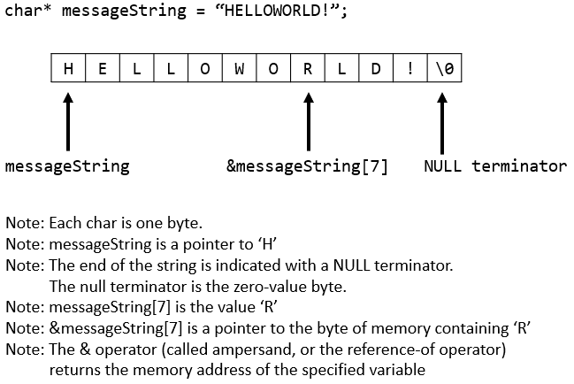

One tricky part of writing good C code is using pointers correctly. Understanding how pointers work, how to use them to index arrays, how they relate to strings, and how to reference and dereference data correctly is vital.
In this studio, you will:
Please complete the required exercises below, as well as any optional enrichment exercises that you wish to complete.
As you work through these exercises, please record your answers in a text file. When finished, submit your work via the git repository.
Make sure that the name of each person who worked on these exercises is listed in the first answer, and make sure you number each of your responses so it is easy to match your responses with each exercise.
return 0;"
This is a valid C program, though it doesn't do much. When it runs
it will immediately quit and return zero to the terminal.
(You don't
see the zero, but any command you run through the terminal
returns some value and you can get that value if you want.
By convention in Linux/Unix a return value of zero indicates
that the program ran successfully, while any non-zero value
indicates an error. These return values
are especially useful for scripting a set of commands in sequence,
as they tell you whether or not each step was successful and allow
you to react appropriately. Typing the command
"echo $?" will show the return value of the last command
executed. You can try this now if you want- remember the program
"cat" prints a file to the terminal, so if you use cat
with a real file that exists you should get a return value of zero, while
if you use the command "cat FileDoesNotExist" you should get
some non-zero return value. You can also try returning different
values from your program as well. But I digress- this is not the purpose of this
studio, but still good for any Linux programmer to know.)
Make sure your code compiles successfully. Remember we use the GCC
compiler to build C programs. If you have named your program
pointers.c then you can use a command such as
gcc -Wall pointers.c -o pointers to build your
code. You can leave this answer blank.
main() function.
char *messagePtr = "HELLOWORLD!"
Let's break down this statement. There are several important pieces.
messagePtr is a pointer.
messagePtr is a pointer
to a char. Remember that a char is a one-byte data type.
messagePtr points to, called a string literal.
Next, let's print this string just to make sure everything
is working correctly. Observe that the %s format specifier
tells printf() to print a string.
printf("%s\n", messagePtr);
You will also need to include stdio.h at the top of your file.
You can leave the answer to this question blank.
messagePtr[0] gives you the first character "H",
the code messagePtr[1] gives you the
second character "E", etc.
Print out each character of the string using a for-loop with
index notation. You can print a character as such: "printf("%c\n", char_to_print).
Your output should look like:
H E L L O W O R L D !
As the answer to this question, copy-paste your for-loop.
*)
and is also important when using pointers.
Just like indexing a pointer, the dereference operator obtains the
value of the data that is pointed to.
If the pointer messagePtr is a pointer to a
character, what character does it point to? In other words, what
do you think is the value
of the dereference operation *messagePtr?
messagePtr and printing it out. The dereference operator is the
asterisk when placed to the left of a pointer. You can print out a single
character like so:
printf("%c\n", *pointer_to_string);
What was printed?
ptr + 1 //same as saying ptr[1]
or we could access the fourth element of the string by adding:
ptr + 3 //accesses fourth element, same as ptr[3]
The index notation you just used is essentially pointer arithmetic (in fact the C standard defines index notation in terms of pointer arithmetic).
Try printing the value of the next few bytes of the string using
pointer arithmetic. To do so, add one, two, or three to the pointer before
dereferencing. For example: *(messagePtr + 1).
Recall that in a properly formatted C-style string the string pointer indicates the first character of the string and always ends with a null-terminator (ends with the character '\0'). See the diagram below.
We can always use the null-terminator to know when a string ends.
For this exercise I want you to print the string using a while loop
instead of a for-loop. Use the fact that the string ends with a null
value as your loop condition. You can use the keyword NULL
or the null character '\0' to compare against. As the answer
to this question copy-paste your while loop.
Suppose we want to write a function that uses strings- what can we do instead?
The answer is to pass a pointer to the function- we can pass a pointer by value,
and that pointer can point to a string. Copy the following function definition
above your main() function:
void printReverse( char* string ){
}
Starting with your code from the previous exercise, write a function
that prints a string in reverse order. For example, printing the
string pointed to by messagePtr should produce the output:
! D L R O W O L L E H
You should not make any assumptions about the string passed to the function.
Use the fact that strings are always null-terminated to figure out how long
the string is. (Do not use the C-standard library function strlen()- get the
value yourself.)
Your code should work equally well with messagePtr
or with another string such as:
char *secondString = "Another string!";
As the answer to this exercise, copy-paste your function.
main() function.
#include <stdlib.h>
char* reverseString( char* input ){
//1. First count how many characters are in the input string
//This creates enough space to store the reversed string, plus one more byte
//for the null terminator
char* output = (char*)malloc( number_of_chars_in_input+1 );
//2. Copy the input string to the output string in reverse order. There are
//multiple ways to do this- consider using a counter, or consider using two
//pointers.
//REMEMBER THAT YOUR OUTPUT STRING MUST END WITH A NULL TERMINATOR. This is not
//provided for you automatically- you must put it there!
return output;
}
The above code bears some explanation. Look up the function malloc()
in the manual pages. This function takes a number and returns a pointer to a region
of memory with that many bytes. For example, malloc(10) returns
a pointer to a region of memory with 10 bytes that you can modify
however you'd like. This is necessary because we need someplace to
put our reversed string. Then, the last line returns that pointer
so it can be used.
Verify your function works with the following code in your main function:
char* reversedMessage = reverseString( messagePtr );
printf("Reversed string: %s\n", reversedMessage);
As the answer to this exercise, copy-paste your last function.